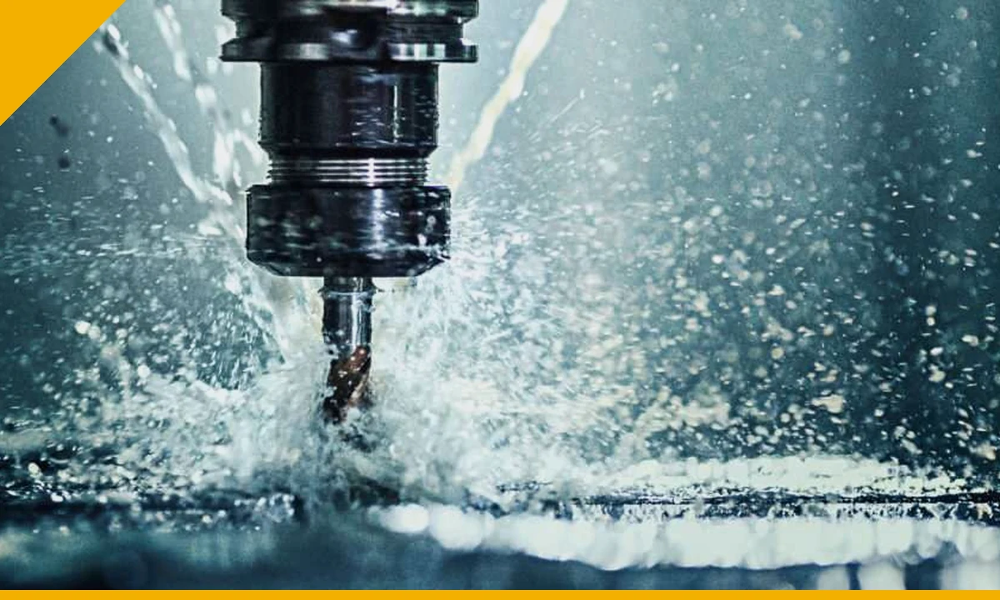

Industrial Machine Breakdown & Maintenance Support
Breakdown response, troubleshooting, preventive maintenance and technical coordination for industrial machinery and supporting systems.

Requirement-led technical support.
Industrial machine maintenance and repair support in Kolkata for CNC, VMC, laser cutting machines, electrical systems, PLC/HMI, hydraulics and pneumatics.
Pricing and execution route depend on the actual material, geometry, quantity, engineering effort, process stages, inspection requirement and delivery scope.
View related division →What to send us
- Machine make/model/year
- Controller or PLC/HMI details
- Alarm code and exact symptom
- Photographs / videos
- Recent service history
- Manual or drawings if available
- Site location and urgency
What we can review
CNC / VMC diagnostics
Scope and acceptance criteria are confirmed against the actual requirement.
Laser machine support
Scope and acceptance criteria are confirmed against the actual requirement.
Electrical fault diagnosis
Scope and acceptance criteria are confirmed against the actual requirement.
PLC / HMI diagnostics
Scope and acceptance criteria are confirmed against the actual requirement.
Hydraulic & pneumatic troubleshooting
Scope and acceptance criteria are confirmed against the actual requirement.
Preventive maintenance / AMC
Scope and acceptance criteria are confirmed against the actual requirement.
Industrial requirements
- Breakdown diagnosis
- Recurring alarm investigation
- Preventive maintenance
- Machine relocation support
- Installation / recommissioning
- Custom spare follow-up
How we work
- Review requirement
- Identify missing technical information
- Confirm process / service route
- Issue quotation for agreed scope
- Execute, verify and hand over
Before you send the requirement
Do you support every machine brand?
Initial review is based on machine type, make/model, controller, fault and available documentation. OEM-restricted activities depend on access and approvals.
Can you provide AMC support?
Scheduled or AMC-style maintenance can be scoped after reviewing machine population, location, frequency and expected coverage.
Can you supply replacement parts after diagnosis?
Where suitable, spares can be sourced or custom components developed through related Crecer Grande divisions.
Need machine breakdown or maintenance support?
Send the available drawing, sample, files, photographs, machine details or problem statement.